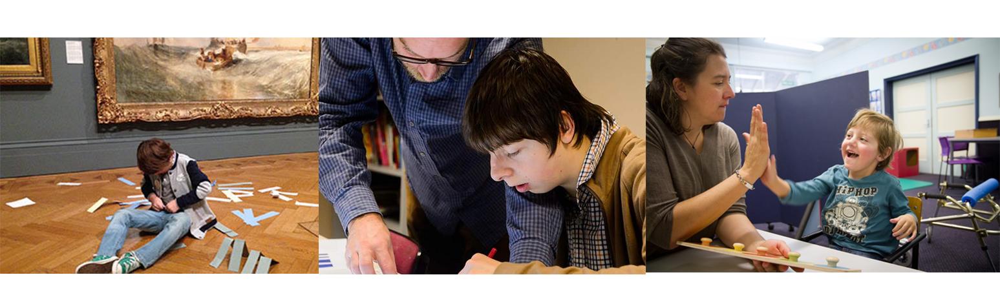

Intro
Galleries, libraries and museums and for everyone, but the experience will be different for every individual, and for some more difficult than others. Many families and young people with autism and learning disabilities find visiting museums difficult, and many parents will scrap the whole idea from the fear of their child not enjoying themselves and not knowing what to expect when going there. Museums are a great learning and interactive resource; they support existing interests and encourage new ones. For children with autism developing social and educational behaviours is very important, which is why nothing should be stopping them from experiencing the museum environment.
Idea
My proposal is to create a guide APP for families with autistic kids and for young people with learning disabilities and autism.
-The APP would provide an interactive map different from others, which would advice to where bathrooms, cafes, lifts and quiet areas are.
-It would provide the family with images of the staff uniform and who to ask for help and images for the children to understand the entrance and main areas of the museum – knowing where they will be and what to expect can help the child remain calm and enjoy themselves.-
-For a family with an autistic child navigating busy areas can be trick, anything can set the child off including bright lights, loud sounds and tight spaces. The APP would provide the best trails to take and exhibits that will be best enjoyed and ones to avoid.
APP Mock Up

Difference it Could Make
Finding a way to make every family feel comfortable, including families with autistic kids would mean more visitors in the museum, parents knowing what to expect and knowing they have support from the staff and museum would make them feel welcomed and relaxed to take their kids to a place that would be safe and happy. It would also encourage young adults with autism to visit the museum, considering they would know where everything is and the best ways to get around. At interactive museums people are encouraged to touch, listen and even smell and taste things, and the great thing is that hands-on learning is very important for kids with autism, it helps them to develop their social and interactive skills, making trips to museums an essential part of their education and personal development. This APP would not only help ‘up’ the accessibility of the museum but it would be a crucial element for parents to feel welcome in this environment and for kids with autism to get the best possible experience out of a museum with no hassles and problems.